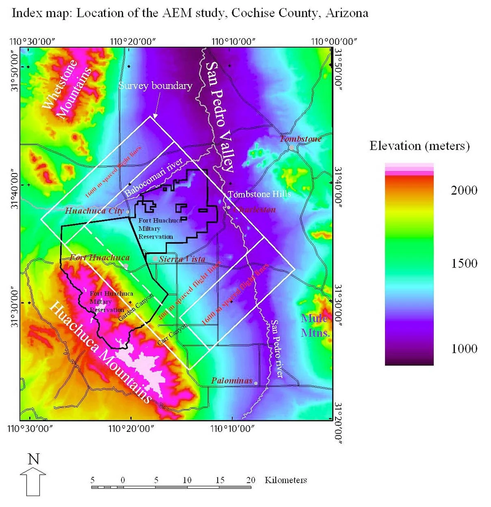

AEM Surveying for Water Security
2021–2025Airborne electromagnetic (AEM) surveys replace incomplete, expensive monitoring-well data with rapid, high-resolution subsurface mapping of site groundwater conditions.
Grant funded through the Environmental Security Technology Certification Program (ESTCP).
- Partner
- U.S. Geological Survey
- Role
- Project lead — developed scope, authored the grant, led execution
- Stack
- GIS · Data Analysis
- Funding
- ~$1.2M ESTCP award

Although a proven technology, AEM had not been widely adopted within the client's infrastructure planning framework. The surveys map hidden aquifer conditions, establishing AEM as an efficient alternative to repeated localized drilling.
Driven by the client's increasing exposure to water insecurity, the successful application of AEM replaced cost-prohibitive assessment methods, providing resource managers with a rapid, precise framework to secure long-term site water resilience.